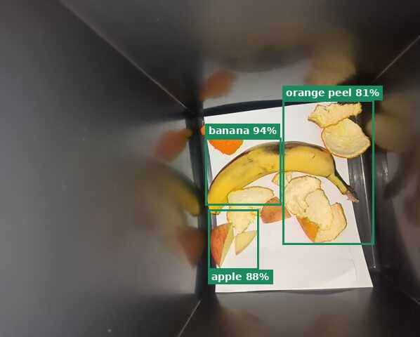
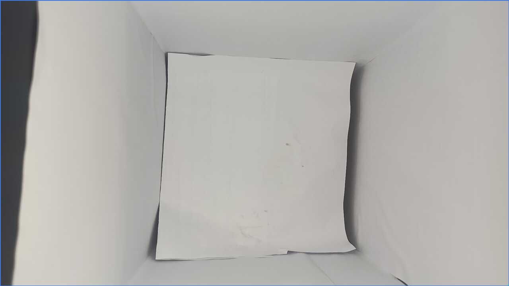
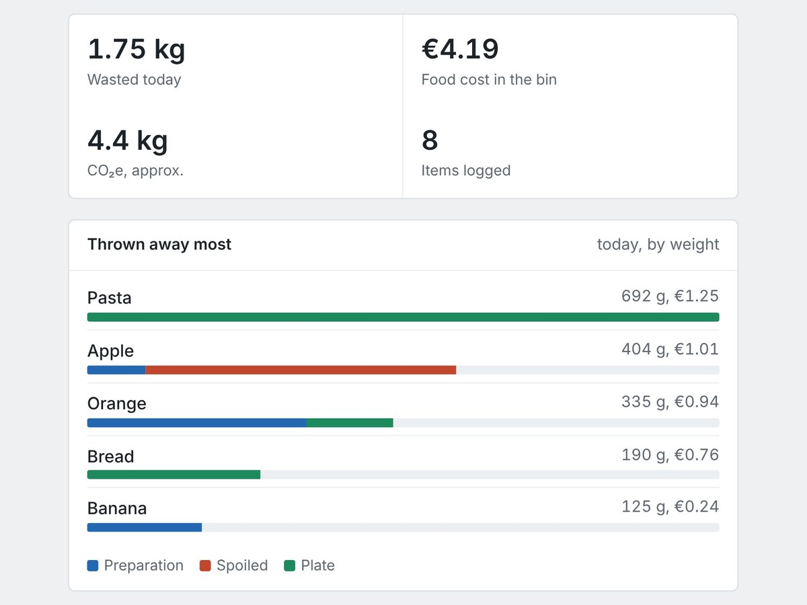
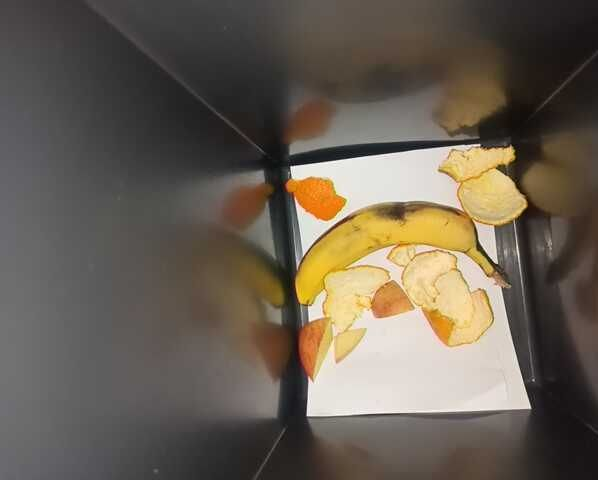
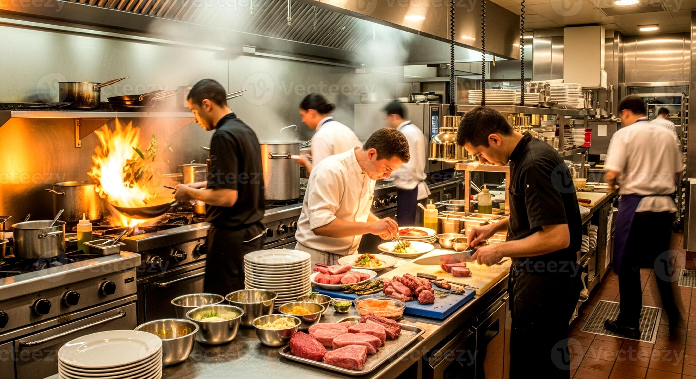
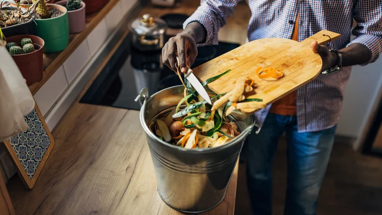
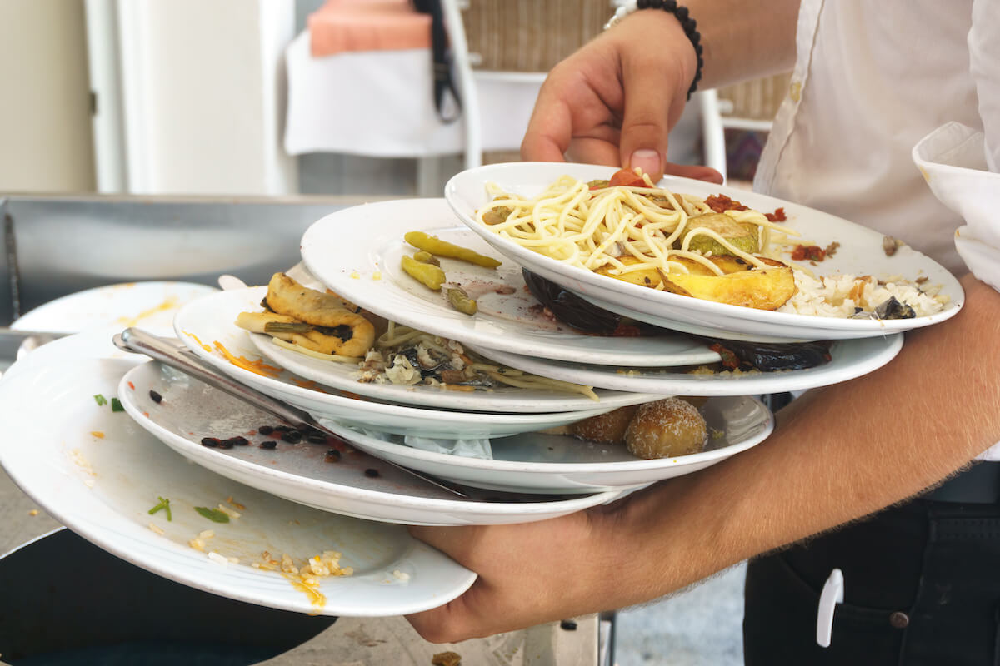

Wall-B sits on the wall above your bio-waste bin. It weighs every tip, sees what it is and tells your team the one thing to change tomorrow morning.
One touch for the cook. No tablet to fill in, no camera on people.


Built for the pace of a real kitchen: the cook does nothing new except press one of three big buttons.

1A load cell under the bin insert records the weight of each tip on its own, not just the total at the end of the day.
The camera compares before and after, cuts out only what was added and names it. Everything runs on site, no images leave the kitchen.

3The dashboard shows where the money goes, split into preparation, spoiled stock and plate leftovers, and suggests one change for tomorrow.
Most kitchens only see a full bin. Without knowing what is in it and why, nobody can change it.
of food were wasted worldwide in 2022, at retail, in food service and at home.
of that came from food service: restaurants, canteens, hotels and catering.
of all food available to consumers ends up wasted.
Source: UNEP Food Waste Index Report 2024 (data for 2022).

A working prototype: ESP32 with a 5 kg load cell, a phone as the camera, and recognition that runs on a laptop.
Restaurants, canteens and hotel kitchens: wherever food is prepped in volume and the bin fills up fast.

Add a photo as img/kitchen.jpg
Add a photo as img/prep.jpg
Add a photo as img/plates.jpg'">